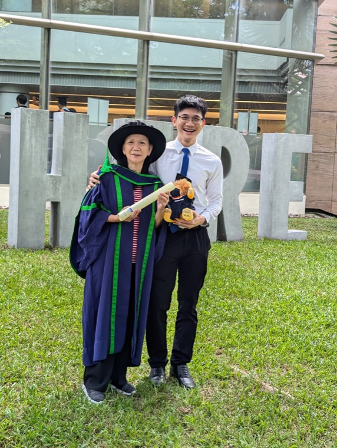

Machine learning researcher working where rigorous theory meets algorithms that generalize in practice. PhD in Computer Science from the National University of Singapore (advised by Prof. Bryan Low & Prof. Patrick Jaillet); since 2023 a Quantitative Researcher at Citadel Securities, building and evaluating predictive systems in real-world, high-noise environments. Currently focused on foundation models, reasoning, and scalable training, with the goal of contributing to frontier AI.
* equal contribution · full list on Google Scholar.